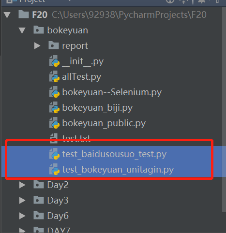
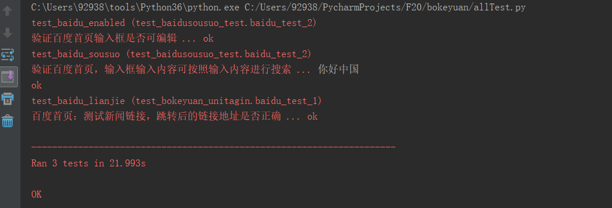

今天开始批量执行用例~，场景是这样的:
工作中我们可能有多个模块文件（.py）这些文件根据不同的业务类型或功能，测试案例分布在不同的模块文件下。前面的小示例中，我们的测试用例都是在一个文件中，直接运行的测试套件~，开发阶段或者调试阶段这样做是没毛病的，但是如果是测试运行阶段，我们不可能这个模块文件下的用例执行完毕后，切换另一个模块中的用例继续执行。所以我们需要用的批量执行多个模块文件的测试用例。
首先第一个用例模块的案例是这样的~
1 import unittest #导入unittest库
2 from selenium import webdriver #导入自动化测试selenium中的webdriver
3
4 class baidu_test_1(unittest.TestCase): #写一个baidu_test_1 类，继承unittest中的TestCase类
5
6 @classmethod #方便我们直接调用，不需要实例化类的对象直接调用
7 def setUp(cls): #所有案例执行前，都先执行该方法，初始化
8 cls.driver = webdriver.Chrome() #实例化一个webdriver对象
9 cls.driver.maximize_window() #最大化浏览器窗口
10 cls.driver.implicitly_wait(15) #页面加载慢的情况，我们设置等待时长15秒
11 cls.driver.get(r'http://www.baidu.com') #打开百度的首页
12
13 @classmethod
14 def tearDown(cls): #所有案例执行后，执行该方法
15 cls.driver.quit() #关闭浏览器
16
17 '''测试用例'''
18 def test_baidu_lianjie(self): #百度链接测试的用例
19 '''百度首页：测试新闻链接，跳转后的链接地址是否正确'''
20 self.driver.find_element_by_link_text('新闻').click() #点击新闻链接后，获取新闻链接：self.driver.current_url
21 self.assertEqual(self.driver.current_url,'http://news.baidu.com/') #用获取到的链接，和实际链接做对比，看是不是相等
22
23 '''if __name__ == '__main__'的意思是：当.py文件被直接运行时，if __name__ == '__main__'之下的代码块将被运行；
24 当.py文件以模块形式被导入时，if __name__ == '__main__'之下的代码块不被运行。'''
25 if __name__ == '__main__':
26 unittest.main(verbosity=2)接下来是第二个用例模块的代码：
1 import unittest
2 from selenium import webdriver
3
4 class baidu_test_2(unittest.TestCase):
5 @classmethod
6 def setUp(cls):
7 cls.driver=webdriver.Chrome()
8 cls.driver.maximize_window()
9 cls.driver.implicitly_wait(15)
10 cls.driver.get(r'http://www.baidu.com')
11
12 @classmethod
13 def tearDown(cls):
14 cls.driver.quit()
15
16 def test_baidu_enabled(self):
17 so=self.driver.find_element_by_id('kw') #检查元素是否可编辑用is_enabled()，可以编辑返回的是True
18 self.assertTrue(so.is_enabled()) #如果返回的是True，那么就是真真为真~通过
19
20 def test_baidu_sousuo(self):
21 so = self.driver.find_element_by_id('kw')
22 so.send_keys('你好中国') #上面的代码选择了输入框，这是输入：send_keys()
23 self.driver.find_element_by_id('su').click() #该方法是模拟点击操作click()
24 print(so.get_attribute('value')) #根据属性获取表单中的值get_attribute('value')
25 self.assertEqual(so.get_attribute('value'),'你好中国') #我们用获取到的值，和我们预期的值做对比，看是否相等
26
27 if __name__ == '__main__':
28 unittest.main(verbosity=2)
注意：测试模块的名称，前面需要统一，看图：两个测试用例模块文件的名字前面都是test_ 开头

接下来就是最后一个模块文件的代码，批量执行用例模块中的代码：
1 import unittest #导入unittest
2 import os #导入前面学习的os库，方便获取文件路径
3
4 def allTests():
5 suite=unittest.TestLoader().discover( #实例化测试套件
6 start_dir=os.path.dirname(__file__), #start_dir=该参数是discover()方法中的，后面的参数是需要批量执行的用例模块路径
7 pattern='test_*.py', #pattern=该参数是discover()方法中的，后面的参数是所有需要执行的用例前面是test_，后半部分用*号代替的.py文件
8 top_level_dir=None) #top_level_dir=该参数是discover()方法中的，固定格式：top_level_dir=None
9 return suite #记住返回测试套件
10
11 def run(): #运行
12 unittest.TextTestRunner(verbosity=2).run(allTests()) #测试报告
13
14 if __name__ == '__main__':
15 run()
批量执行就是这样的~~~~
总结：
1、 #检查元素是否可编辑用is_enabled()，可以编辑返回的是True，否则是Flase
2、在编辑框中输入内容用：send_keys()
3、点击按钮的操作可以用：click()
4、根据属性获取表单中的值get_attribute('value') 比如搜索中的内容
5、获取当前页面的url链接地址： driver.current_url 来判断我们跳转的页面是否正确
6、批量执行用例用到的unitest库中的TestLoader()类，该类中的discover(start_dir, pattern=’test*.py’, top_level_dir=None)方法
discover中可以看出有三个参数：以下是百度给大家的轮子~~~自行学习
-------------来自自学的总结，希望对大家有帮助，不会的朋友可以留言，一起进步~~~~~秋天来了，注意季节转换，容易生病~~~~~~贴秋膘